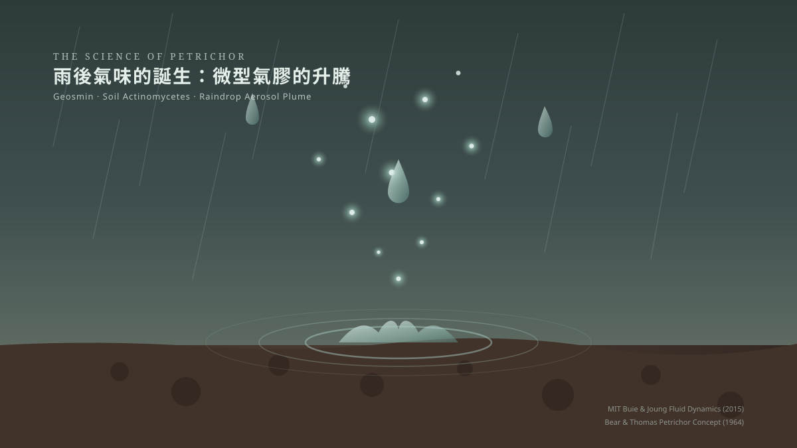
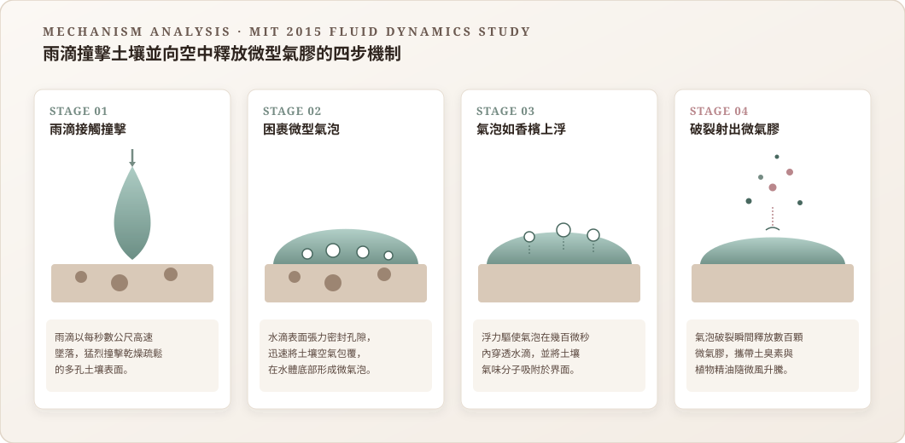

為什麼雨後的空氣有一種特別的味道？
大地初雨的嗅覺詩篇：土臭素、放線菌與雨滴撞擊微氣膠的流體力學真相

在經歷了一段漫長的乾燥晴日後，烏雲低垂，第一陣涼爽的驟雨拍打在柏油路面、花園泥土與石階上。就在雨絲觸地的剎那，空氣中隨即瀰漫開一股難以言喻的獨特芳香——混雜著濕潤泥土的芬芳、青草的清澀，以及一種近乎洗滌心靈的清冽氣息。水本身明明無色無味，這股令人著迷的「雨後氣味」，究竟是從哪裡憑空誕生的？
名字的誕生：澳洲實驗室裡的「神之血」
這種伴隨雨水而來的泥土氣味，千百年來被各國詩人與農夫歌頌，但直到 20 世紀中葉，它才在嚴謹的科學領域獲得了專屬身分。1964 年，澳洲聯邦科學與工業研究組織（CSIRO）的兩位礦物化學家——伊莎貝爾·喬伊·貝爾（Isabel Joy Bear）與理查·托馬斯（Richard G. Thomas），在著名科學期刊《自然》（Nature）上發表了一篇題為《Nature of Argillaceous Odour》的開創性論文。
他們從黏土、岩石與乾燥土壤中蒸餾出一種帶有黃色油狀的揮發性混合物，並將這種氣味正式命名為 Petrichor。這個優雅詞彙由兩個古希臘字根組成：petra（石頭）與 īchōr（神話中在希臘諸神血管中流動的純淨神血）。兩位科學家指出，這種物質在乾旱期間由某些植物分泌並被岩石礦物吸收，等待雨水催化喚醒。
土臭素：古老放線菌的生命密碼
雖然植物分泌的揮發油構成了氣味的基底，但賦予雨後空氣那種鮮明「濕潤泥土感」的真正靈魂，是一種名為土臭素（Geosmin）的雙環醇類有機化合物。
土臭素並非由泥土本身合成，而是寄居在土壤中的微生物大軍——放線菌（Actinomycetes）的產物。特別是其中的鏈黴菌屬（Streptomyces），這類細菌在溫暖潮濕的土壤中繁衍生息；當乾旱來臨、土壤水分逐漸枯竭時，細菌為了度過逆境會開始減緩活動，並生成耐旱的微小孢子，而在這一生理代謝過程中，副產物土臭素便在乾燥土壤顆粒表面大量蓄積。
有趣的是，演化生物學家發現，人類對土臭素的嗅覺靈敏度甚至超越了鯊魚對血腥味的感知。人體鼻腔嗅覺受器只要在每公升空氣中嗅到幾個兆分之一克（ppt）的土臭素分子，大腦就會觸發強烈反應。這很可能是遠古人類祖先在非洲稀樹草原上賴以生存的演化遺跡：能夠在數公里外聞出水源方位的部族，更有機會找到豐沛的水草與獵物，從而存活下來。
【原理圖解】微型香檳效應：MIT 高速攝影揭示的微氣膠噴射
土臭素明明深藏在地面顆粒中，既然雨滴是垂直向下砸落，氣味分子為什麼不是被雨水壓進地底，反而逆流騰空撲向我們的鼻腔？
這個困惑物理學界數十年的難題，直到 2015 年才由麻省理工學院（MIT）機械工程系學者 Youngsoo Joung 與 Cullen R. Buie 揭開真相。他們使用每秒達數千張幀率的超高速攝影機，近距離觀測雨滴擊打在 28 種不同多孔性土壤表面的流體動態：

研究發現：當一顆雨滴接觸到乾燥多孔土壤時，擴散的水滴薄膜會迅速將土壤孔隙中的微量空氣密封封裝。這些被困在底部的空氣形成了數以萬計的微型氣泡，就像剛開瓶的香檳一樣，微氣泡在浮力作用下以極高速度向上穿透水滴，並在水滴頂部薄膜破裂。
在破裂的瞬間，微小液滴會以氣膠（Aerosols）的形式被彈射至數十公分的空中。每顆微小的雨滴撞擊，都能噴射出數百個微型氣膠顆粒，而這些微粒內部正緊密包裹著土壤顆粒表面的土臭素、植物揮發油與細菌孢子。隨後，地面微風將這些氣膠散布進更廣闊的對流層，形成我們聞到的芬芳。
氣味的複調：臭氧、植物油與雨勢的變奏
如果我們將雨後的味道完全簡化為「土臭素」，那就忽略了這場嗅覺交響樂的精妙複雜度。事實上，一場雨的氣味取決於多種成分的精巧配比：
1. 植物油脂的夏日積累：在乾旱期間，許多植物會分泌特定種類的長鏈脂肪酸與精油，其主要生理功能是抑制鄰近植物幼芽競爭，並防止水分過度蒸發。這些油脂滲入岩石縫隙，當雨滴帶來微氣膠時，便與土臭素共同散發出淡淡的草本甜香。
2. 臭氧（Ozone, O₃）的電氣前奏：在夏季強烈的雷陣雨（Thunderstorms）來臨前，空氣中常會先聞到一股銳利、微酸且帶有微弱漂白水感的清爽氣味。這是由於高空雲層間的閃電電弧將氧氣分子（O₂）和氮氣解離，重新重構成臭氧，並隨下沉氣流推送到地面。必須強調的是：臭氧只出現在帶有電氣活動的雷雨中，若是平靜的春雨或綿綿細雨，臭氧便不會是主要氣味成分。
3. 雨量與雨勢的臨界點：雨後氣味往往在「久旱初遇小至中雨」時最為濃烈。如果是狂風暴雨或連綿數日的梅雨，氣味反而會快速淡化甚至消失。原因很簡單：過量的地面積水會形成連續水層，阻隔了多孔土壤的氣泡生成機制；同時，大量雨水會迅速稀釋溶解表層的微量有機物，使氣膠噴射現象徹底停止。
現代人生活在鋼筋水泥與空調循環的無菌濾網之中，我們習慣了人工香精與車流廢氣，卻常在夏日初雨的某個瞬間，被一陣撲鼻而來的濕潤土香猝不及防地打動。
那不僅僅是一次感官上的舒適，更是銘刻在人類基因深處的遠古召喚。那是數百萬年來，我們的祖先在茫茫荒野中聞到生機、感知豐饒、確認生命得以延續的古老信號。下一次當天空落雨，不妨走出屋簷，深吸一口氣——你聞到的，是橫跨億萬年微生物代謝、岩石沉澱與流體物理學共同譜寫的大地之歌。